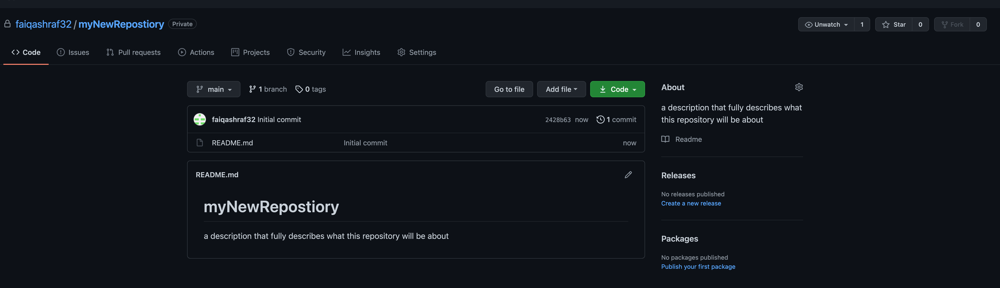

Lesson 2-2
Cloning a Repository
The word "clone" simply means to make a duplicate of an already existing thing. Clones come in many different shapes and sizes, and in our case today, cloning means that we are copying the repository in question from GitHub.com onto our local machine.
Remember the GitHub Triange from 1-3? The idea behind that triangle was to show you the different parts of where your repository will be stored. We are now looking at the bottom-left of that triangle, your local machine. The device that you will code on. The good news is that just like making a repository, it is very easy to clone onto your machine. I will demonstrate 2 ways to do so, via GitHub Desktop [which is simply a cake walk] or for a little more of a challenge [something that you would have to do on a server, like in the bottom-right part of our triangle], on terminal.
GitHub Desktop
- Navigate to GitHub.com (or your enterprise version)
- Find the repository in question that you want to clone.
- Locate the green "code" button on the homepage of the repository. (see figure 2D).  Figure 2D: The green code button should be easy to find.
- Under the code button, click "Open with GitHub Desktop" (see figure 2E). Figure 2E: The button to click is circled for your convenience.
- Verify the information presented in Figure 2F. Click "clone" when verified. Figure 2F: Make sure that you are storing the repository in the right place.
- Boom, you're done! (see figure 2G). Figure 2G: This is what it will look like once the deed is done, so to speak.
Terminal [On Mac or Server-Side Only]
- Navigate to GitHub.com (or your enterprise version)
- Find the repository in question that you want to clone.
- Locate the green "code" button on the homepage of the repository. (see figure 2D).
- Copy the HTTPS link from this window (shown in Figure 2E, at the top).
- Open terminal and navigate [via the cd command] to the directory in which you want to clone the repository.
- In Terminal, type git clone URL and paste your HTTPS url in place of "URL" and click enter. (see Figure 2H) Figure 2H: The format in which you should type the git clone code. Figure 2I: You'll see something like this after you click enter.
- Now to see the cloned repository, enter cd yourRepositoryName and click enter.
- Make sure that all of your files from github.com are in the folder by typing ls and clicking enter. (see figure 2J) Figure 2J: You'll see something like this after you do the ls command.
That's all there is too it. See how easy that was? Now everyone else you're collaborating with has to repeat the same steps. Now that we're up and running, we will discuss how to interact with Git in the next chapter.